- 可結合已有的OSS存儲 (AWS/阿里雲)
- 可以手機/Pad檢視
- 可指定不同帳戶權限
- 可主動推送拍攝進度資訊
- 可配合需求訂制功能
- 安全高速連線傳輸，資料安全有保障
Datacenter 影像管理系统是一个Web-Based 的数据库系统，提供剧组各个部门人员不同的功能与权限，结合简单的操作方式，衔接拍摄期到后期的资料整合，和制作流程，直到成片上映的完整流程协同软件。
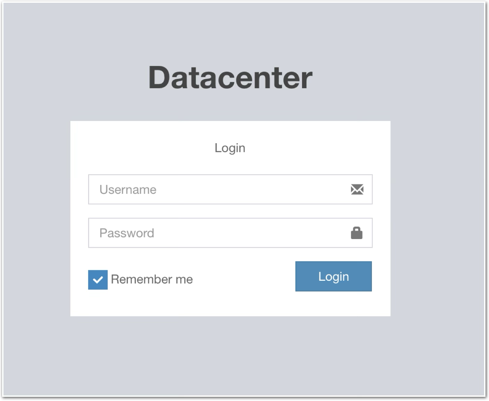
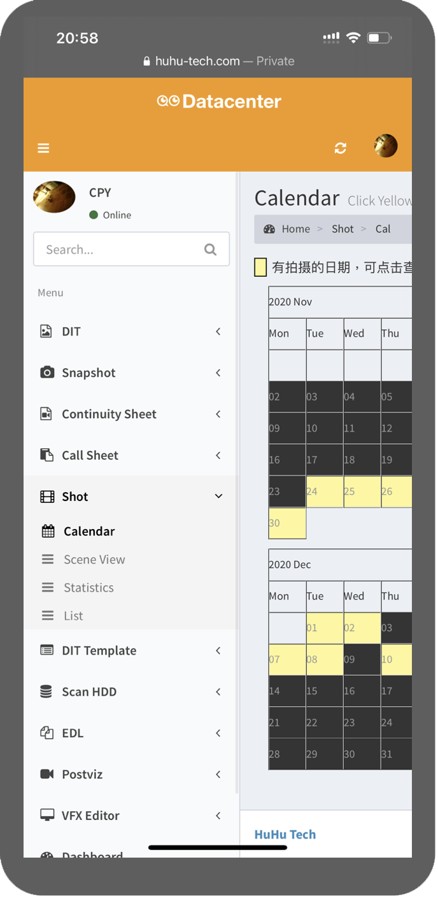
依照不同條件搜尋，並可下載報告
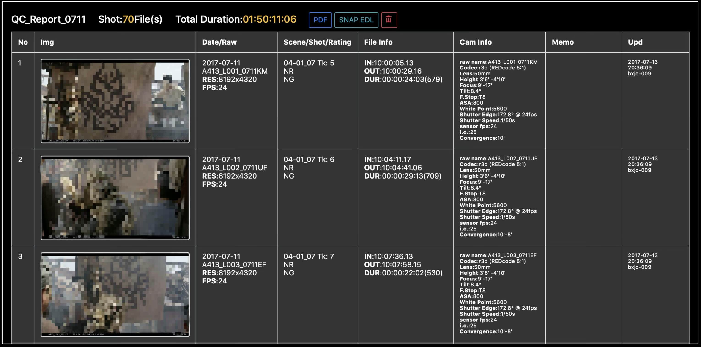
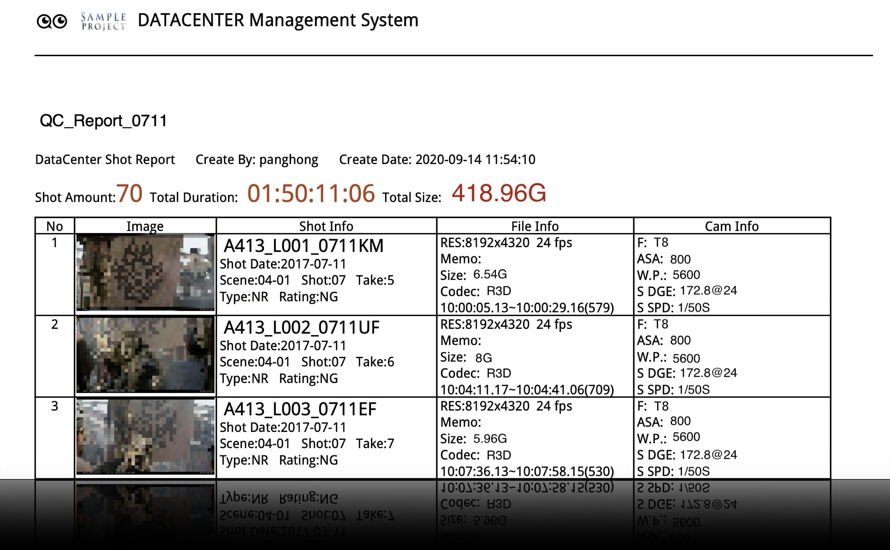
一目瞭然拍攝日期
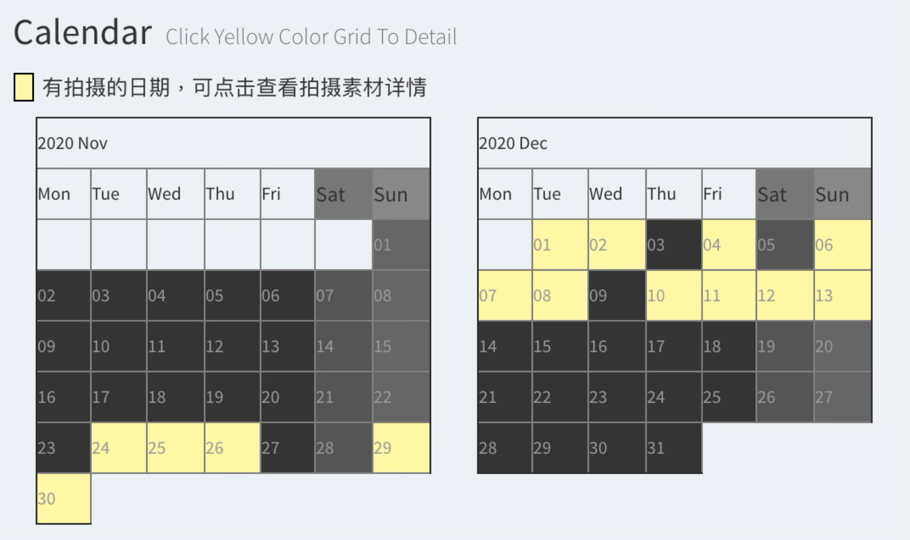
可依據 原始檔卡號 / 場鏡號 / 拍攝日期，鏡頭種類 NR / EL/ CL/ RF，以及評分 OK / KP / NG等條件，做篩選式資料查詢。
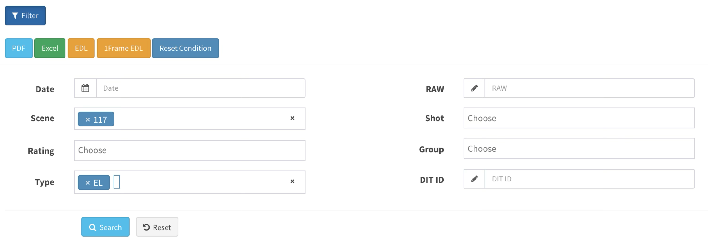
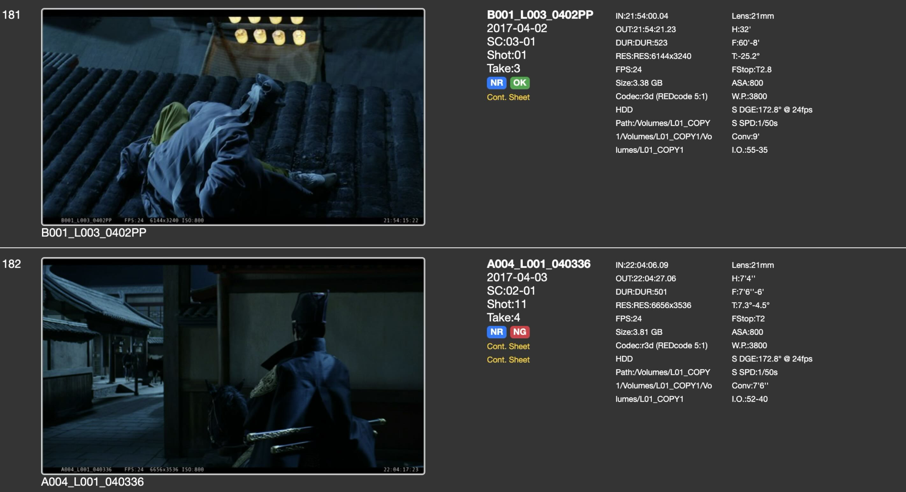
自動生成EDL, 可直接将素材按照 场次 或者 拍摄时间顺序 匯出到剪辑软件。
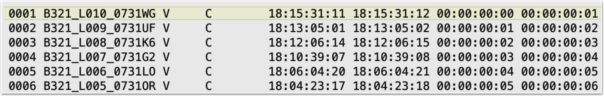
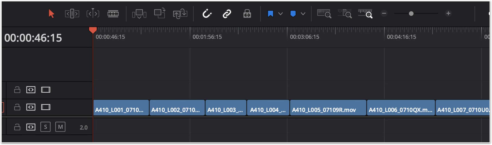
可按照場次滑動瀏覽剪輯素材，方便瞭解拍攝進度
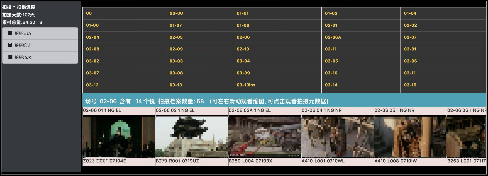
剪輯版本比較支持EDL的比較，可以對新舊剪輯版的改變進行標示，包括新增鏡頭、刪除鏡頭，增減Frame等，並輸出EXCEL報告
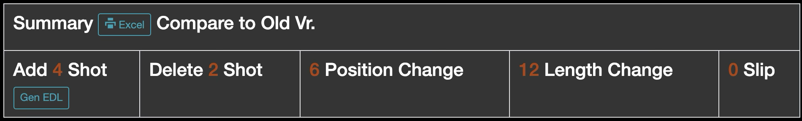
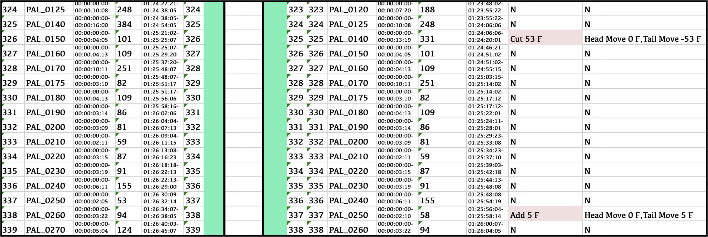
利用簡單的EDL和Excel，就可以上傳完成一個版本的特效鏡頭列表。方便分發和查詢 每一個版本的問題回報還有路徑，用簡單的方式上傳，整合在一起
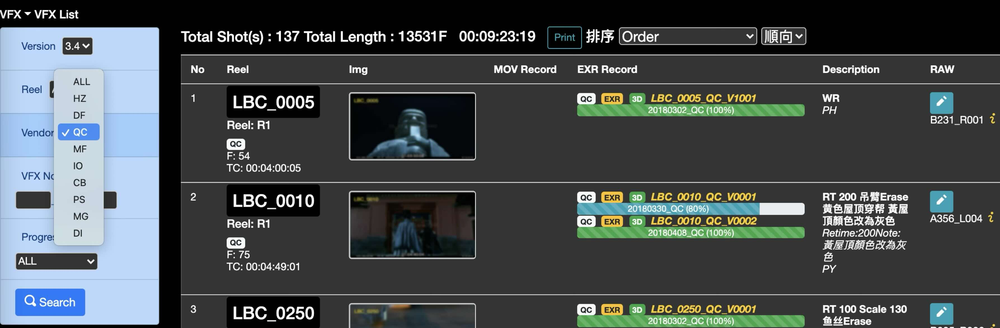
每一次的審核，都有對應的反饋截圖，說明需要改進的示意，讓特效公司的製作人員可以充分理解。 每次的檢查都輸出成PDF報告，方便相關的部門紀錄
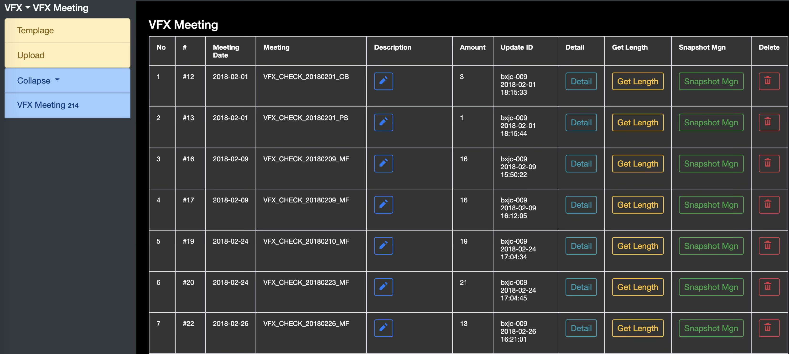
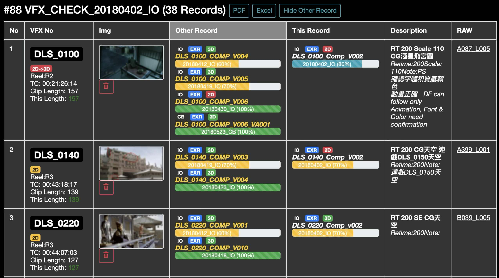
依照特效場景，本數(Reel)，製作公司顯示，可以方便導演和製作團隊了解進度
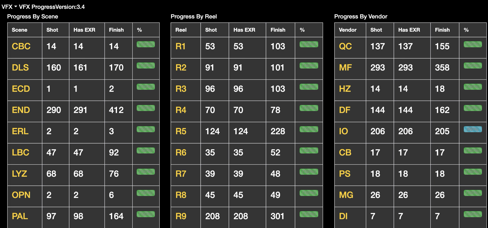
可以充分顯示後期製作過程中，交互重疊的製作項目， 可以設定emai提醒發送給相關人員 也可以匯出成為Excel
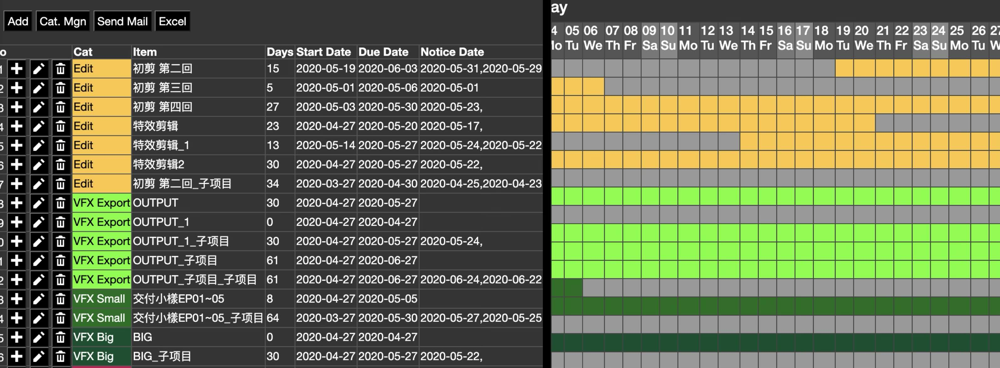
上傳的特效鏡頭，可以自動轉檔為H.264/H.265，以及轉碼一份適合網頁播放的串流檔案，方便在路上用Pad做創意性的審核
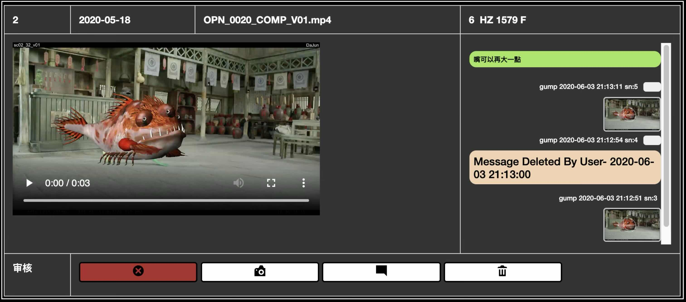
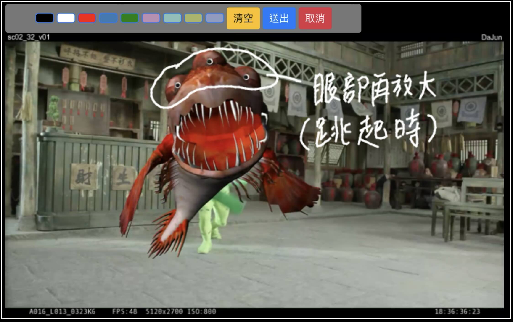
每一個輸出的檔案，都有相關的輸出規格填寫，讓工作人員容易了解和操作
現在也結合了雲端存儲以及和雲端渲染的廠商進行資源整合，讓渲染和傳送的工作更安全和便捷
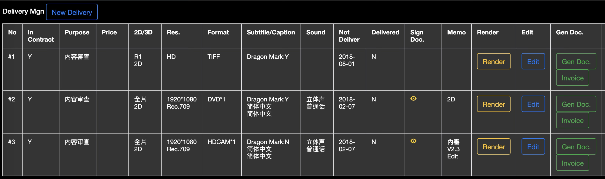
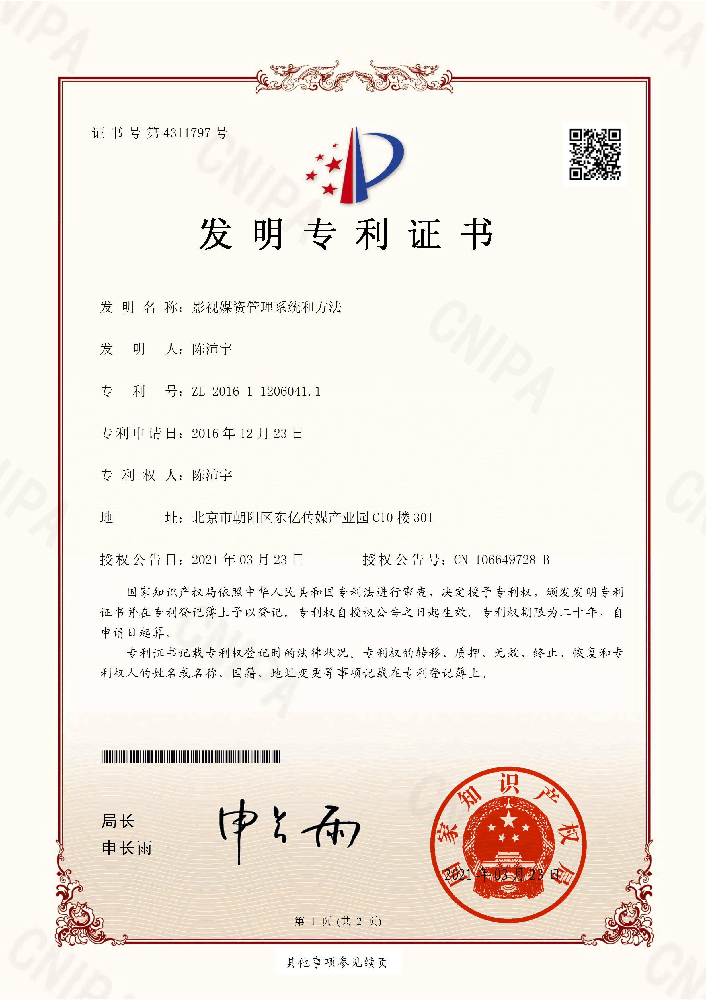